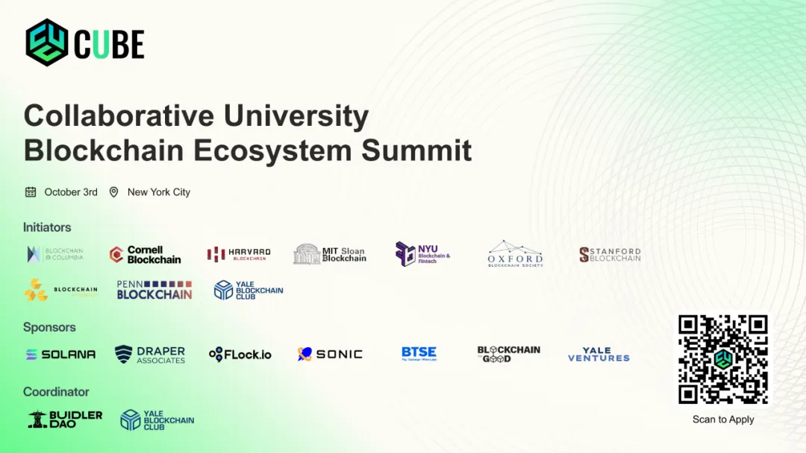
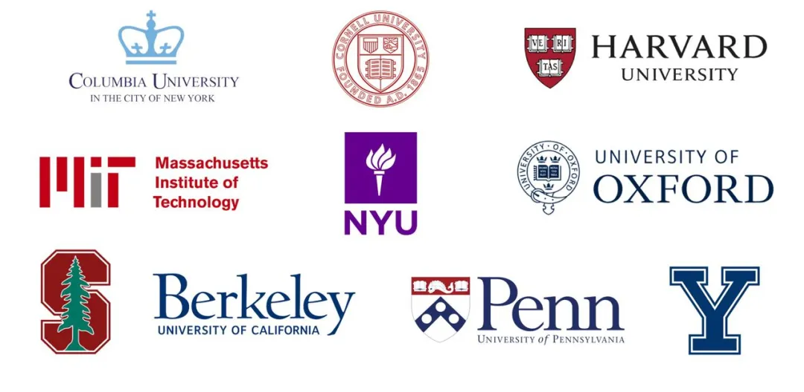
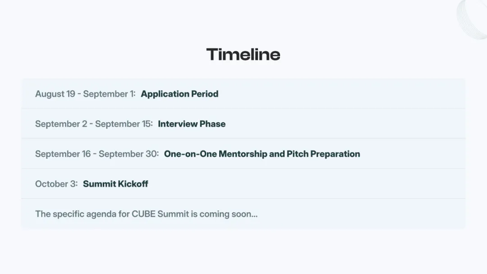
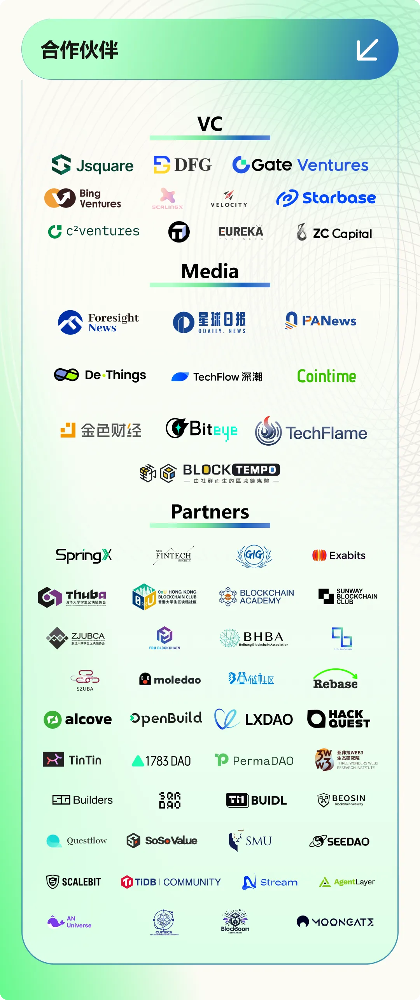

前言
CUBE Summit 是由全球顶尖学府链协一同打造的的 Crypto 行业盛会，由 BuidlerDAO 承办。此次盛会不仅汇聚了顶级 VC 和知名项目方，共同探讨 AI x Crypto 发展趋势，更为早期创业项目、年轻创业者提供了一个展示才华的平台。

什么是 CUBE Summit？

为什么举办 CUBE Summit？
高校堪称 Crypto 人才的孵化基地：顶尖高校作为 Crypto 行业的人才摇篮，持续不断地输出行业精英。在区块链领域的知名项目和机构中，这些高校校友常常以核心力量的角色出现，全力推动行业的技术创新与生态拓展。为进一步强化这一趋势，诚挚邀请更多大学加入我们的行列，共同打造 Crypto 领域的璀璨未来。
为年轻创业者搭建专业展示平台：在校园内外，众多开发者活力满满，他们渴望在区块链世界中开拓属于自己的版图。当下的年轻创业者，极有可能成为未来区块链独角兽企业的创始人。CUBE Summit 正是为这些充满激情与创造力的灵魂精心打造的舞台。通过连接行业先行者与新生力量，我们将助力新兴创业者在区块链行业中绽放光芒，实现价值跃升。
凝聚多方力量，推动创新发展：作为多所高校的首次联合行动，我们期望借此契机打破学校与行业之间的壁垒。通过整合 Crypto 生态中的公链技术、风险投资（VC）、头部项目等多维度资源，在分享宝贵经验与专业智慧的同时，促进深度合作，激发创新活力，共同推动区块链技术的迭代升级与广泛应用。
在首届 CUBE Summit ，你将收获什么？
OG 演讲者 —— 行业前沿和未来趋势的深度分享
本次活动将集结全球区块链行业的领军人物，以 “AI x Crypto” 为主题，展开深入的专题讨论与精彩的主题演讲，为大家带来全新的认知视角与深刻洞见。头部的 “AI x Crypto” 项目将汇聚于此，共同分享行业的最新动态。与此同时，我们还会邀请顶级的风险投资机构，诸如 a16z crypto、DCG、Dragonfly、Draper Associates 以及 Pantera Capital 等，让他们分享对于 Crypto 未来发展趋势以及投资热点的前沿性思考。
更多演讲者，敬请期待！
独家路演舞台 —— 展示你的创意
活动的亮点之一是路演环节，入选项目将有机会在加密领域最具影响力的 OG 面前登台展示。我们欢迎在 “AI x Crypto” 领域不同背景和阶段的项目参与。
对于进入决赛阶段的项目，你将有机会背靠我们强大的校友网络，链接丰富的资源：
行业引领者颁发的特别奖项（敬请期待！）
参加活动当日的闭门晚会，与发起方和演讲嘉宾深入链接
接触强大的投资人网络，与顶级 VC 直接对话
获得零距离连接头部公链的机会
获得直通进入 A16z 的 CSX 和 SpringX 等知名加速器终面评审的机会
获得路演1对1指导，包括打磨路演材料和提升路演技巧等
差旅和住宿费用的资助
加入潜力团队或寻找优秀合伙人
对于那些渴望踏上“火箭”的 BUIDLer 来说，这是一个难得的契机，深入接触来自各高校的潜力项目，有机会匹配、加入合适的创业团队；
对于那些渴望踏上“火箭”的人来说，这是一个难得的契机，深入接触来自各高校的潜力项目，有机会匹配、加入合适的创业团队；
对于项目方来说，这也是寻找优秀的联合创始人的绝佳时机，连接各类优秀人才，共同实现创业愿景。
如何加入 CUBE Summit？
10个最具创新力的项目将获得资助，前往纽约路演，抓住机会——立即申请！
1、报名要求
“AI x Crypto” 相关的任何阶段的项目 / 渴望加入创业团队的个人
欢迎任何个人或团队报名，本次发起方的校友或校友项目将优先考虑
注：欢迎渴望加入初创团队的个人申请，我们会帮助链接合适的团队
2、报名时间
即日起至2024年9月1日23:59（UTC-4）

3、路演名额
10个
4、报名方式
链接：https://apply.cubesummit.xyz/
CUBE Summit 不仅仅是为期一天的活动，更是一次从高校出发、链接全球的集结号。
加入我们，共同打造 Crypto 世界的未来！
观众报名🔗：https://lu.ma/hdbfank6

Contact Info
Website : https://cubesummit.xyz/
X：https://x.com/CUBE_Summit
TG contact: @JaneZhang
TG Group: https://t.me/cubesummit
往期推荐